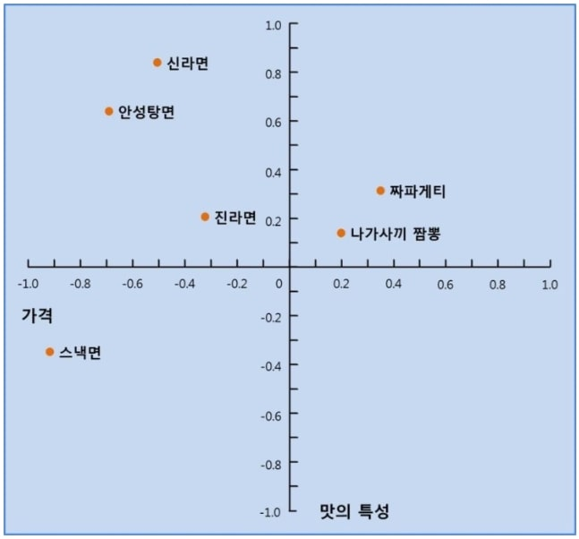

S: segmentation - 시장세분화
시장을 마케팅 관리자의 목적에 따라 나눈다. 예들들어 같은 스마트폰 시장이라 해도, 전문가용 시장, 캐쥬얼 사용자용 시장 , 게임시장 등등으로 다시 나눈다.
T: targeting - 타깃선정
위의 세분화한 시장중 자신이 진입할 시장을 선정하는 작업. 이때 SWOT(Strengths, weaknesses, opportunities, threats) 분석을 비롯한 자사의 역량을 고려하여 선정한다.
P: positioning - 포지셔닝
타깃선정한 시장의 고객에게 자사 제품을 어떤 제품으로 인지시킬지를 결정한다. 예를 들어 아이폰의 경우 기존 스마트폰들의
비즈니스 도구라는 인식에서 벗어나 일반 사용자들에게 '인터넷도 하고, 음악도 듣고 보너스로 전화도 하는 유희용 기기'의 개념으로 포지셔닝되어 성공한 사례이기도 하다.
지각도(perceptual map): 제품의 심리적인 포지셔닝을 위한 하나의 강력한 도구로 사용되는 기법.EX)
